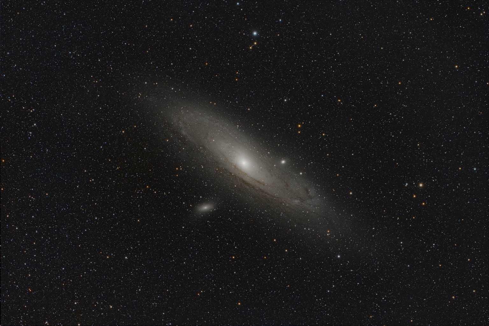

Dust lanes
Dark bands cross the bright disk. Dust blocks some of the starlight behind it, creating these contrasting lanes.
Look a little closer · 01
One photograph. Dust lanes, a bright spiral, and two small companions. Take your time exploring.

Tap a number to learn more. Move your mouse or tap the image to inspect a detail. Use the sliders for precise control.
Dark bands cross the bright disk. Dust blocks some of the starlight behind it, creating these contrasting lanes.
Behind the photograph
My processing toolkit includes Siril, SETI Astro Suite / Cosmic Clarity, and Affinity Photo. This comparison shows the supplied FITS preview alongside my finished gallery image.
The FITS preview makes a starting point for looking at the galaxy and its surrounding star field.
Compare the dark lanes, faint outer light and bright centre. Each responds differently to changes in contrast.
Move the comparison slider to explore the changes in brightness and colour across the same field.
Feature positions were identified visually in this photograph, not from an astrometric solution. Background information: NASA.
NASA — Andromeda’s dust lanes